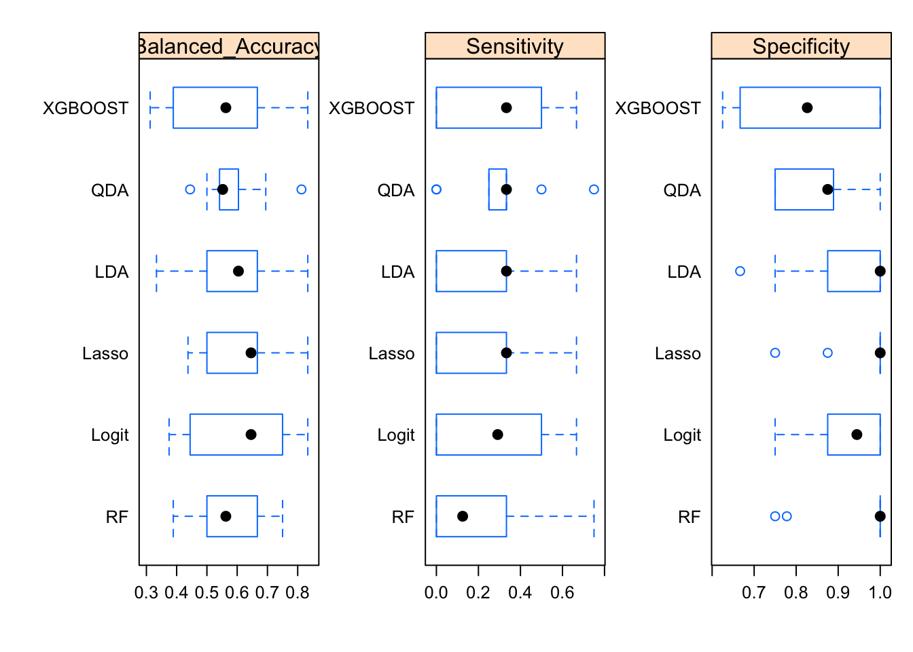
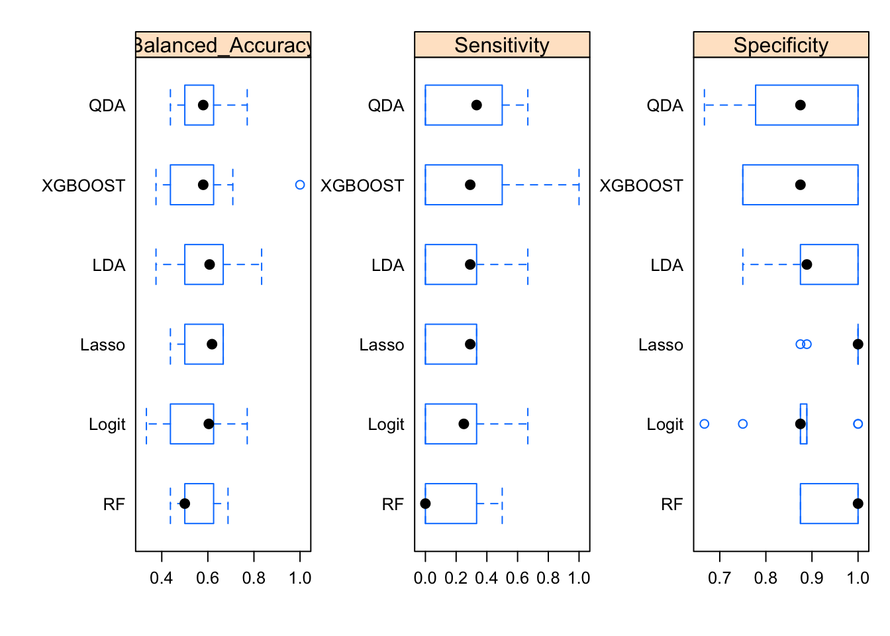
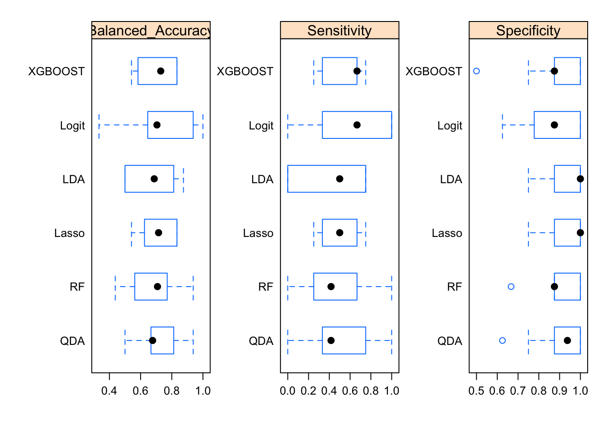

library(readxl)
library(caret)
library(rpart)
library(caretEnsemble)
library(tidyverse)
library(fastshap)
library(readr)
library(data.table)
library(mltools)
library(MLmetrics)
library(conflicted)
library(parallel)
library(doParallel)
library(here)
conflicts_prefer(dplyr::filter)ADHD Diagnosis Predictor
This project aims to answer the following research question: What factors best predict the ADHD diagnosis?
#Step 1: Loadings libraries and preparing data sets
Load Libraries
Set WD, load data, and check the names of the variables from the data set
ProjectData <- read_excel("DataScience_Data.xlsx")
names(ProjectData) [1] "Participant" "Complex" "Simple" "L2"
[5] "SRT" "Declearn" "MLAT" "DM"
[9] "Ospan" "Rspan" "Sspan" "WM"
[13] "BAARS" "ADHD" "PHQ" "Sex"
[17] "Age" "SpokenLanguages" "Education" summary(ProjectData) Participant Complex Simple L2
Min. :4201 Min. :0.0000 Min. :0.1700 Min. :0.2200
1st Qu.:4317 1st Qu.:0.1700 1st Qu.:0.5800 1st Qu.:0.5000
Median :4401 Median :0.3300 Median :0.7500 Median :0.6100
Mean :4407 Mean :0.3552 Mean :0.7141 Mean :0.5948
3rd Qu.:4503 3rd Qu.:0.5000 3rd Qu.:0.9200 3rd Qu.:0.6700
Max. :4603 Max. :1.0000 Max. :1.0000 Max. :1.0000
SRT Declearn MLAT DM
Min. :-0.2000 Min. :-0.140 Min. : 2.00 Min. :-2.489000
1st Qu.: 0.0400 1st Qu.: 1.040 1st Qu.:13.00 1st Qu.:-0.481000
Median : 0.0900 Median : 1.400 Median :17.00 Median : 0.089000
Mean : 0.0851 Mean : 1.307 Mean :16.61 Mean :-0.001092
3rd Qu.: 0.1300 3rd Qu.: 1.680 3rd Qu.:20.00 3rd Qu.: 0.519000
Max. : 0.3700 Max. : 2.850 Max. :24.00 Max. : 1.485000
Ospan Rspan Sspan WM
Min. : 3.00 Min. : 1.00 Min. : 0.00 Min. :15.00
1st Qu.:19.00 1st Qu.:19.00 1st Qu.:12.00 1st Qu.:55.00
Median :24.00 Median :23.00 Median :16.00 Median :64.00
Mean :22.33 Mean :21.65 Mean :14.88 Mean :61.97
3rd Qu.:28.00 3rd Qu.:27.00 3rd Qu.:19.00 3rd Qu.:72.00
Max. :30.00 Max. :30.00 Max. :24.00 Max. :84.00
NA's :1
BAARS ADHD PHQ Sex
Min. :18.00 Min. :0.0000 Min. : 0.000 Min. :0.0000
1st Qu.:29.00 1st Qu.:0.0000 1st Qu.: 6.000 1st Qu.:0.0000
Median :35.00 Median :0.0000 Median : 9.000 Median :1.0000
Mean :36.75 Mean :0.2876 Mean : 9.778 Mean :0.6993
3rd Qu.:45.00 3rd Qu.:1.0000 3rd Qu.:14.000 3rd Qu.:1.0000
Max. :68.00 Max. :1.0000 Max. :27.000 Max. :2.0000
Age SpokenLanguages Education
Min. :18.00 Min. :1.000 Min. :12.00
1st Qu.:18.00 1st Qu.:2.000 1st Qu.:13.00
Median :19.00 Median :2.000 Median :13.50
Mean :20.08 Mean :2.327 Mean :14.25
3rd Qu.:20.00 3rd Qu.:3.000 3rd Qu.:15.00
Max. :38.00 Max. :5.000 Max. :19.00
hist(ProjectData$BAARS)
#39+ for diagnosis
#Sample Size
ProjectData %>% summarise(n = n())# A tibble: 1 × 1
n
<int>
1 153Variables to keep
ProjectData.K<-ProjectData %>%
select(Participant, L2, SRT, DM, WM, BAARS, ADHD, PHQ,
Sex, Age, SpokenLanguages, Education)
summary(ProjectData.K) Participant L2 SRT DM
Min. :4201 Min. :0.2200 Min. :-0.2000 Min. :-2.489000
1st Qu.:4317 1st Qu.:0.5000 1st Qu.: 0.0400 1st Qu.:-0.481000
Median :4401 Median :0.6100 Median : 0.0900 Median : 0.089000
Mean :4407 Mean :0.5948 Mean : 0.0851 Mean :-0.001092
3rd Qu.:4503 3rd Qu.:0.6700 3rd Qu.: 0.1300 3rd Qu.: 0.519000
Max. :4603 Max. :1.0000 Max. : 0.3700 Max. : 1.485000
WM BAARS ADHD PHQ
Min. :15.00 Min. :18.00 Min. :0.0000 Min. : 0.000
1st Qu.:55.00 1st Qu.:29.00 1st Qu.:0.0000 1st Qu.: 6.000
Median :64.00 Median :35.00 Median :0.0000 Median : 9.000
Mean :61.97 Mean :36.75 Mean :0.2876 Mean : 9.778
3rd Qu.:72.00 3rd Qu.:45.00 3rd Qu.:1.0000 3rd Qu.:14.000
Max. :84.00 Max. :68.00 Max. :1.0000 Max. :27.000
Sex Age SpokenLanguages Education
Min. :0.0000 Min. :18.00 Min. :1.000 Min. :12.00
1st Qu.:0.0000 1st Qu.:18.00 1st Qu.:2.000 1st Qu.:13.00
Median :1.0000 Median :19.00 Median :2.000 Median :13.50
Mean :0.6993 Mean :20.08 Mean :2.327 Mean :14.25
3rd Qu.:1.0000 3rd Qu.:20.00 3rd Qu.:3.000 3rd Qu.:15.00
Max. :2.0000 Max. :38.00 Max. :5.000 Max. :19.00 ProjectData.K$Participant <- as.factor(ProjectData.K$Participant)
ProjectData.K$ADHD[ProjectData.K$ADHD == 1] <- "adhd"
ProjectData.K$ADHD[ProjectData.K$ADHD == 0] <- "no_adhd"
ProjectData.K$ADHD <- as.factor(ProjectData.K$ADHD)
table(ProjectData.K$ADHD)
adhd no_adhd
44 109 Split the data and create training and testing data sets 75% of data will go into the training and 25% of data will go into the testing sets
set.seed(666) # Set seed, so that the model produce the consistent results for reproducibility
train_idx <- createDataPartition(ProjectData.K$ADHD, p = 0.75, list = FALSE)
# Create training and test datasets
train_data_ADHD_Status <- ProjectData.K[train_idx, ]
test_data_ADHD_Status <- ProjectData.K[-train_idx, ]
table(train_data_ADHD_Status$ADHD)
adhd no_adhd
33 82 table(test_data_ADHD_Status$ADHD)
adhd no_adhd
11 27 prop.table(table(train_data_ADHD_Status$ADHD))
adhd no_adhd
0.2869565 0.7130435 prop.table(table(test_data_ADHD_Status$ADHD))
adhd no_adhd
0.2894737 0.7105263 #Step 2: Set up all models
# Set up cross-validation using ROC as the metric
BI_cv_control <- trainControl(
method = "cv", #trained on 9, validated on 1
number = 10, #split data into 10 folds
# summaryFunction = prSummary, # Use caret’s prSummary for binary classification for AUC
# summaryFunction = twoClassSummary, # Use caret’s twoClassSummary for binary classification for ROC metric
# summaryFunction = defaultSummary, # Use caret’s defaultSummary for binary classification for accuracy
summaryFunction = multiClassSummary, # multiClassSummary returns Mean_Balanced_Accuracy
classProbs = TRUE,
allowParallel = TRUE,
savePredictions = "final"
)
# Setup parallel processing
cl <- makePSOCKcluster(detectCores())
registerDoParallel(cl)Train models to see which fits the data better The first set of models includes only control variables: memory learning scores, age, sex, and education
models.binary_ADHD_1 <- caretList(
ADHD ~ SRT+DM+WM+PHQ+Sex+Age+Education,
data = train_data_ADHD_Status,
trControl = BI_cv_control,
#metric = "AUC",
metric = "Mean_Balanced_Accuracy",
tuneList = list(
# Logistic regression for binary classification
Logit = caretModelSpec(
method = "glm",
preProcess = c("center", "scale"),
family = "binomial"
),
# Lasso using glmnet with family binomial
Lasso = caretModelSpec(
method = "glmnet",
preProcess = c("center", "scale"),
tuneGrid = expand.grid(alpha = 1, lambda = seq(0.005, 0.1, 0.005)),
family = "binomial"
),
# Linear Discriminant Analysis
LDA = caretModelSpec(
method = "lda",
preProcess = c("center", "scale")
),
# Quadratic Discriminant Analysis
QDA = caretModelSpec(
method = "qda",
preProcess = c("center", "scale")
),
# Random Forest model
RF = caretModelSpec(
method = "rf",
preProcess = c("center", "scale"),
tuneGrid = expand.grid(mtry = seq(1, 10, 1)),
ntree = 1000,
importance = TRUE
),
# XGBoost model for classification
XGBOOST = caretModelSpec(
method = "xgbTree",
preProcess = c("center", "scale"),
verbosity = 0,
tuneGrid = expand.grid(
nrounds = 20,
max_depth = 3,
eta = 0.3,
gamma = seq(0.1, 0.3, 0.05),
colsample_bytree = 1,
min_child_weight = 1,
subsample = seq(0.7, 0.8, 0.05)
)
)
)
)Train binary models for group 1 (adding language info)
models.binary_ADHD_2 <- caretList(
ADHD ~ SRT+DM+WM+PHQ+Sex+Age+Education+L2+SpokenLanguages,
data = train_data_ADHD_Status,
trControl = BI_cv_control,
#metric = "AUC",
metric = "Mean_Balanced_Accuracy",
tuneList = list(
# Logistic regression for binary classification
Logit = caretModelSpec(
method = "glm",
preProcess = c("center", "scale"),
family = "binomial"
),
# Lasso using glmnet with family binomial
Lasso = caretModelSpec(
method = "glmnet",
preProcess = c("center", "scale"),
tuneGrid = expand.grid(alpha = 1, lambda = seq(0.005, 0.1, 0.005)),
family = "binomial"
),
# Linear Discriminant Analysis
LDA = caretModelSpec(
method = "lda",
preProcess = c("center", "scale")
),
# Quadratic Discriminant Analysis
QDA = caretModelSpec(
method = "qda",
preProcess = c("center", "scale")
),
# Random Forest model
RF = caretModelSpec(
method = "rf",
preProcess = c("center", "scale"),
tuneGrid = expand.grid(mtry = seq(1, 10, 1)),
ntree = 1000,
importance = TRUE
),
# XGBoost model for classification
XGBOOST = caretModelSpec(
method = "xgbTree",
preProcess = c("center", "scale"),
verbosity = 0,
tuneGrid = expand.grid(
nrounds = 20,
max_depth = 3,
eta = 0.3,
gamma = seq(0.1, 0.3, 0.05),
colsample_bytree = 1,
min_child_weight = 1,
subsample = seq(0.7, 0.8, 0.05)
)
)
)
)Train binary models for group 3 (adding BAARS survey)
models.binary_ADHD_3 <- caretList(
ADHD ~ SRT+DM+WM+PHQ+Sex+Age+Education+L2+SpokenLanguages+BAARS,
data = train_data_ADHD_Status,
trControl = BI_cv_control,
#metric = "AUC",
metric = "Mean_Balanced_Accuracy",
tuneList = list(
# Logistic regression for binary classification
Logit = caretModelSpec(
method = "glm",
preProcess = c("center", "scale"),
family = "binomial"
),
# Lasso using glmnet with family binomial
Lasso = caretModelSpec(
method = "glmnet",
preProcess = c("center", "scale"),
tuneGrid = expand.grid(alpha = 1, lambda = seq(0.005, 0.1, 0.005)),
family = "binomial"
),
# Linear Discriminant Analysis
LDA = caretModelSpec(
method = "lda",
preProcess = c("center", "scale")
),
# Quadratic Discriminant Analysis
QDA = caretModelSpec(
method = "qda",
preProcess = c("center", "scale")
),
# Random Forest model
RF = caretModelSpec(
method = "rf",
preProcess = c("center", "scale"),
tuneGrid = expand.grid(mtry = seq(1, 10, 1)),
ntree = 1000,
importance = TRUE
),
# XGBoost model for classification
XGBOOST = caretModelSpec(
method = "xgbTree",
preProcess = c("center", "scale"),
verbosity = 0,
tuneGrid = expand.grid(
nrounds = 20,
max_depth = 3,
eta = 0.3,
gamma = seq(0.1, 0.3, 0.05),
colsample_bytree = 1,
min_child_weight = 1,
subsample = seq(0.7, 0.8, 0.05)
)
)
)
)
# Stop parallel processing when finished
stopCluster(cl)Step 3: Resampling results from all models and creating the metrics
# Compare resampling results across all binary models
results.binary.ADHD_1 <- resamples(models.binary_ADHD_1)
bwplot(results.binary.ADHD_1, metric = c("Sensitivity", "Specificity", "Balanced_Accuracy", "Accuracy"),
scales = list(x = list(relation = "free"), y = list(relation = "free")))
results.binary.ADHD_2 <- resamples(models.binary_ADHD_2)
bwplot(results.binary.ADHD_2, metric = c("Sensitivity", "Specificity", "Balanced_Accuracy", "Accuracy"),
scales = list(x = list(relation = "free"), y = list(relation = "free")))
results.binary.ADHD_3 <- resamples(models.binary_ADHD_3)
bwplot(results.binary.ADHD_3, metric = c("Sensitivity", "Specificity", "Balanced_Accuracy", "Accuracy"),
scales = list(x = list(relation = "free"), y = list(relation = "free")))
# Helper function to extract confusion matrices for a given model list
extract_CM <- function(model_list, train_data, test_data, response_col) {
# Loop over models in the list and compute confusion matrices
cm_train <- lapply(model_list, function(mod) {
confusionMatrix(
predict(mod, newdata = train_data),
reference = train_data[[response_col]]
)
})
cm_test <- lapply(model_list, function(mod) {
confusionMatrix(
predict(mod, newdata = test_data),
reference = test_data[[response_col]]
)
})
# Return a list containing both training and testing confusion matrices
list(Train = cm_train, Test = cm_test)
}
# Extract confusion matrices for each group
CM.models.binary_ADHD_1 <- extract_CM(models.binary_ADHD_1, train_data_ADHD_Status, test_data_ADHD_Status, "ADHD")
CM.models.binary_ADHD_2 <- extract_CM(models.binary_ADHD_2, train_data_ADHD_Status, test_data_ADHD_Status, "ADHD")
CM.models.binary_ADHD_3 <- extract_CM(models.binary_ADHD_3, train_data_ADHD_Status, test_data_ADHD_Status, "ADHD")
# Optionally, print all confusion matrices for each group and each model
#print_confusion_matrices <- function(cm_list, group_name) {
# cat("\n--- Confusion Matrices for", group_name, "---\n")
# for(model_name in names(cm_list$Train)) {
# cat("\nModel:", model_name, "\n")
# cat("Training Data:\n")
# print(cm_list$Train[[model_name]])
# cat("\nTesting Data:\n")
# print(cm_list$Test[[model_name]])
# cat("\n-------------------------------\n")
# }
#}
# Print confusion matrices for each group
#print_confusion_matrices(CM.models.binary_ADHD_1, "models.binary_ADHD_1")
#print_confusion_matrices(CM.models.binary_ADHD_2, "models.binary_ADHD_2")
#print_confusion_matrices(CM.models.binary_ADHD_3, "models.binary_ADHD_3")
#confusion matrix for XGBOOST only
CM.models.binary_ADHD_1$Train$XGBOOSTConfusion Matrix and Statistics
Reference
Prediction adhd no_adhd
adhd 23 0
no_adhd 10 82
Accuracy : 0.913
95% CI : (0.8459, 0.9575)
No Information Rate : 0.713
P-Value [Acc > NIR] : 1.379e-07
Kappa : 0.7664
Mcnemar's Test P-Value : 0.004427
Sensitivity : 0.6970
Specificity : 1.0000
Pos Pred Value : 1.0000
Neg Pred Value : 0.8913
Prevalence : 0.2870
Detection Rate : 0.2000
Detection Prevalence : 0.2000
Balanced Accuracy : 0.8485
'Positive' Class : adhd
CM.models.binary_ADHD_1$Test$XGBOOSTConfusion Matrix and Statistics
Reference
Prediction adhd no_adhd
adhd 8 7
no_adhd 3 20
Accuracy : 0.7368
95% CI : (0.569, 0.866)
No Information Rate : 0.7105
P-Value [Acc > NIR] : 0.4389
Kappa : 0.4225
Mcnemar's Test P-Value : 0.3428
Sensitivity : 0.7273
Specificity : 0.7407
Pos Pred Value : 0.5333
Neg Pred Value : 0.8696
Prevalence : 0.2895
Detection Rate : 0.2105
Detection Prevalence : 0.3947
Balanced Accuracy : 0.7340
'Positive' Class : adhd
CM.models.binary_ADHD_2$Train$XGBOOSTConfusion Matrix and Statistics
Reference
Prediction adhd no_adhd
adhd 24 1
no_adhd 9 81
Accuracy : 0.913
95% CI : (0.8459, 0.9575)
No Information Rate : 0.713
P-Value [Acc > NIR] : 1.379e-07
Kappa : 0.7709
Mcnemar's Test P-Value : 0.02686
Sensitivity : 0.7273
Specificity : 0.9878
Pos Pred Value : 0.9600
Neg Pred Value : 0.9000
Prevalence : 0.2870
Detection Rate : 0.2087
Detection Prevalence : 0.2174
Balanced Accuracy : 0.8575
'Positive' Class : adhd
CM.models.binary_ADHD_2$Test$XGBOOSTConfusion Matrix and Statistics
Reference
Prediction adhd no_adhd
adhd 8 6
no_adhd 3 21
Accuracy : 0.7632
95% CI : (0.5976, 0.8856)
No Information Rate : 0.7105
P-Value [Acc > NIR] : 0.3025
Kappa : 0.4673
Mcnemar's Test P-Value : 0.5050
Sensitivity : 0.7273
Specificity : 0.7778
Pos Pred Value : 0.5714
Neg Pred Value : 0.8750
Prevalence : 0.2895
Detection Rate : 0.2105
Detection Prevalence : 0.3684
Balanced Accuracy : 0.7525
'Positive' Class : adhd
CM.models.binary_ADHD_3$Train$XGBOOSTConfusion Matrix and Statistics
Reference
Prediction adhd no_adhd
adhd 30 1
no_adhd 3 81
Accuracy : 0.9652
95% CI : (0.9133, 0.9904)
No Information Rate : 0.713
P-Value [Acc > NIR] : 2.548e-12
Kappa : 0.9134
Mcnemar's Test P-Value : 0.6171
Sensitivity : 0.9091
Specificity : 0.9878
Pos Pred Value : 0.9677
Neg Pred Value : 0.9643
Prevalence : 0.2870
Detection Rate : 0.2609
Detection Prevalence : 0.2696
Balanced Accuracy : 0.9484
'Positive' Class : adhd
CM.models.binary_ADHD_3$Test$XGBOOSTConfusion Matrix and Statistics
Reference
Prediction adhd no_adhd
adhd 9 8
no_adhd 2 19
Accuracy : 0.7368
95% CI : (0.569, 0.866)
No Information Rate : 0.7105
P-Value [Acc > NIR] : 0.4389
Kappa : 0.4493
Mcnemar's Test P-Value : 0.1138
Sensitivity : 0.8182
Specificity : 0.7037
Pos Pred Value : 0.5294
Neg Pred Value : 0.9048
Prevalence : 0.2895
Detection Rate : 0.2368
Detection Prevalence : 0.4474
Balanced Accuracy : 0.7609
'Positive' Class : adhd
##########
extract_metrics <- function(cm_obj) {
data.frame(
Accuracy = cm_obj$overall["Accuracy"],
Sensitivity = cm_obj$byClass["Sensitivity"],
Specificity = cm_obj$byClass["Specificity"],
Precision = cm_obj$byClass["Pos Pred Value"],
F1 = cm_obj$byClass["F1"]
)
}
# Label for rows
model_labels <- c(
"Model 1 - Train", "Model 1 - Test",
"Model 2 - Train", "Model 2 - Test",
"Model 3 - Train", "Model 3 - Test"
)
# Combine metrics from each confusion matrix
xgb_metrics_table <- rbind(
extract_metrics(CM.models.binary_ADHD_1$Train$XGBOOST),
extract_metrics(CM.models.binary_ADHD_1$Test$XGBOOST),
extract_metrics(CM.models.binary_ADHD_2$Train$XGBOOST),
extract_metrics(CM.models.binary_ADHD_2$Test$XGBOOST),
extract_metrics(CM.models.binary_ADHD_3$Train$XGBOOST),
extract_metrics(CM.models.binary_ADHD_3$Test$XGBOOST)
)
# Add labels and clean up
rownames(xgb_metrics_table) <- model_labels
xgb_metrics_table <- round(xgb_metrics_table, 3)
# Print final table
print(xgb_metrics_table) Accuracy Sensitivity Specificity Precision F1
Model 1 - Train 0.913 0.697 1.000 1.000 0.821
Model 1 - Test 0.737 0.727 0.741 0.533 0.615
Model 2 - Train 0.913 0.727 0.988 0.960 0.828
Model 2 - Test 0.763 0.727 0.778 0.571 0.640
Model 3 - Train 0.965 0.909 0.988 0.968 0.937
Model 3 - Test 0.737 0.818 0.704 0.529 0.643#RF seems the winner (I do not think that Alex agreed here).
# Updated helper function to compute Mean_Balanced_Accuracy using multiClassSummary
calc_balacc <- function(mod, truth, newdata) {
# Get predicted probabilities and predicted class labels
prob <- predict(mod, newdata = newdata, type = "prob")
pred <- predict(mod, newdata = newdata)
# Build a data frame with observed values, predictions, and probabilities.
# The column names in 'prob' must match the levels in the response factor.
df <- data.frame(obs = truth,
pred = pred,
prob)
# multiClassSummary computes several metrics including Mean_Balanced_Accuracy.
# Note: Even in binary classification, it returns "Mean_Balanced_Accuracy".
metrics <- multiClassSummary(df, lev = levels(truth), model = mod)
metrics["Balanced_Accuracy"]
}
# Updated evaluation function that computes balanced accuracy on train and test sets
evaluate_models_balacc <- function(model_list, train_data, test_data, response_col) {
train_balacc <- sapply(model_list, function(mod)
calc_balacc(mod, truth = train_data[[response_col]], newdata = train_data))
test_balacc <- sapply(model_list, function(mod)
calc_balacc(mod, truth = test_data[[response_col]], newdata = test_data))
data.frame(
Model = names(model_list),
Train_BalAcc = train_balacc,
Test_BalAcc = test_balacc,
Diff = train_balacc - test_balacc,
row.names = NULL
)
}
# Example usage for group 1 and group 2 binary models
BI_results1 <- evaluate_models_balacc(
model_list = models.binary_ADHD_1,
train_data = train_data_ADHD_Status,
test_data = test_data_ADHD_Status,
response_col = "ADHD"
)
BI_results2 <- evaluate_models_balacc(
model_list = models.binary_ADHD_2,
train_data = train_data_ADHD_Status,
test_data = test_data_ADHD_Status,
response_col = "ADHD"
)
BI_results3 <- evaluate_models_balacc(
model_list = models.binary_ADHD_3,
train_data = train_data_ADHD_Status,
test_data = test_data_ADHD_Status,
response_col = "ADHD"
)
# Combine the results from the two groups for comparison
BI_results1$Set <- "No L2"
BI_results2$Set <- "With L2"
BI_results3$Set <- "BAARS"
BI_results_all <- rbind(BI_results1, BI_results2, BI_results3)
# Print the combined balanced accuracy results
BI_results_all Model Train_BalAcc Test_BalAcc Diff Set
1 Logit 0.6241685 0.6632997 -0.03913115 No L2
2 Lasso 0.5938655 0.6178451 -0.02397963 No L2
3 LDA 0.6393200 0.6632997 -0.02397963 No L2
4 QDA 0.7180340 0.6902357 0.02779831 No L2
5 RF 0.9848485 0.6632997 0.32154882 No L2
6 XGBOOST 0.8484848 0.7340067 0.11447811 No L2
7 Logit 0.6210273 0.7542088 -0.13318141 With L2
8 Lasso 0.5303030 0.5454545 -0.01515152 With L2
9 LDA 0.6361789 0.7542088 -0.11802989 With L2
10 QDA 0.7422395 0.6902357 0.05200378 With L2
11 RF 1.0000000 0.5269360 0.47306397 With L2
12 XGBOOST 0.8575388 0.7525253 0.10501355 With L2
13 Logit 0.8179970 0.7340067 0.08399031 BAARS
14 Lasso 0.7756837 0.7525253 0.02315841 BAARS
15 LDA 0.7756837 0.7525253 0.02315841 BAARS
16 QDA 0.8695492 0.7626263 0.10692289 BAARS
17 RF 1.0000000 0.7255892 0.27441077 BAARS
18 XGBOOST 0.9484479 0.7609428 0.18750513 BAARSStep 3: Computing SHAP Values for RF to understand what predictors are the most influential
# Create a character vector with the names of the selected predictors
selected_vars <- c("L2", "SRT", "DM", "WM", "PHQ", "Sex", "Age",
"SpokenLanguages", "Education")
# Subset the training data for SHAP analysis
BI_X_train <- ProjectData[, selected_vars]
# For binary classification, define a prediction wrapper that returns probabilities for the positive class.
predict_prob_BI <- function(model, newdata) {
prob <- predict(model, newdata = newdata, type = "prob")
prob[, 2]
}
# Compute SHAP values using fastshap for one of the QDR models
set.seed(123) # For reproducibility
BI_shap_vals_RF <- fastshap::explain(
object = models.binary_ADHD_2$RF,
X = BI_X_train,
pred_wrapper = predict_prob_BI,
nsim = 50
)
# Calculate absolute SHAP values for each predictor
BI_abs_mean_RF <- colMeans(abs(BI_shap_vals_RF))
# Create a data frame for absolute SHAP values for plotting
df_BI_shap_abs <- data.frame(
Variable = names(BI_abs_mean_RF),
Mean_SHAP = BI_abs_mean_RF
)
# Order variables by importance
df_BI_shap_abs <- df_BI_shap_abs %>%
arrange(desc(Mean_SHAP))
# Create a bar plot of the absolute mean SHAP values
Shap_Means_BI <- ggplot(df_BI_shap_abs, aes(x = reorder(Variable, Mean_SHAP), y = Mean_SHAP)) +
geom_bar(stat = "identity", fill = "#F8766D") +
labs(title = "Absolute Mean SHAP Values for RF Binary Model",
x = "Variable",
y = "Absolute Mean SHAP Value") +
coord_flip() +
theme_minimal()
Shap_Means_BI